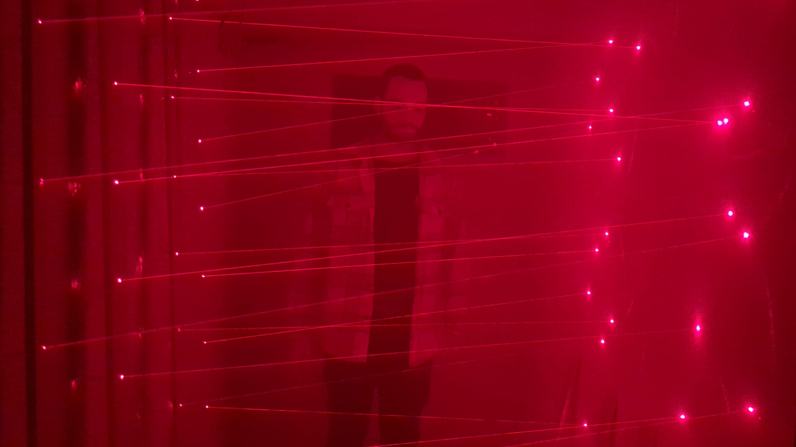

Le projet
« Le Repère » est la suite de l'escape game « Séquestrés ». Après vous être enfuis de justesse d'une secte dont vous alliez être le sacrifice, vous trouvez un repère pour vous cacher le temps que le jour revienne. Mais tout semble avoir été calculé et cet endroit qui semblait être un heureux hasard n'est pas si sûr qu'il n'y paraît.
Pendant 1h30, il va falloir déjouer les pièges de ce repère pour s'enfuir avant que le piège ne se referme sur vous.

Comment ça marche ?
Ce projet a nécessité 8 caméras infrarouges connectées, 5 Raspberry Pi et un serveur local avec une application web pour contrôler tous les mécanismes à distance. Le point central du jeu : un couloir avec 90 lasers répartis en 8 rangées à éteindre pour retrouver la sortie, le tout agrémenté de choix et dilemmes moraux qui influencent la suite de l'histoire et le sort des autres coéquipiers.